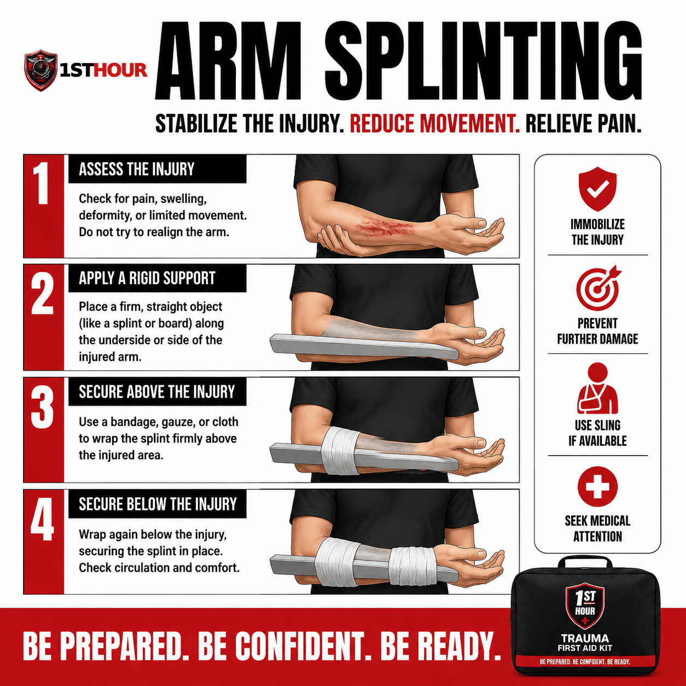
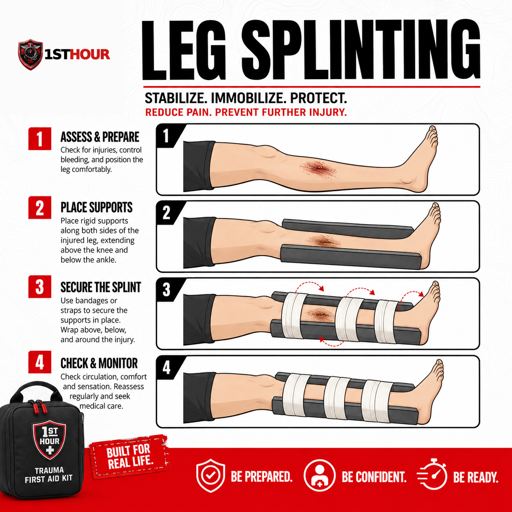
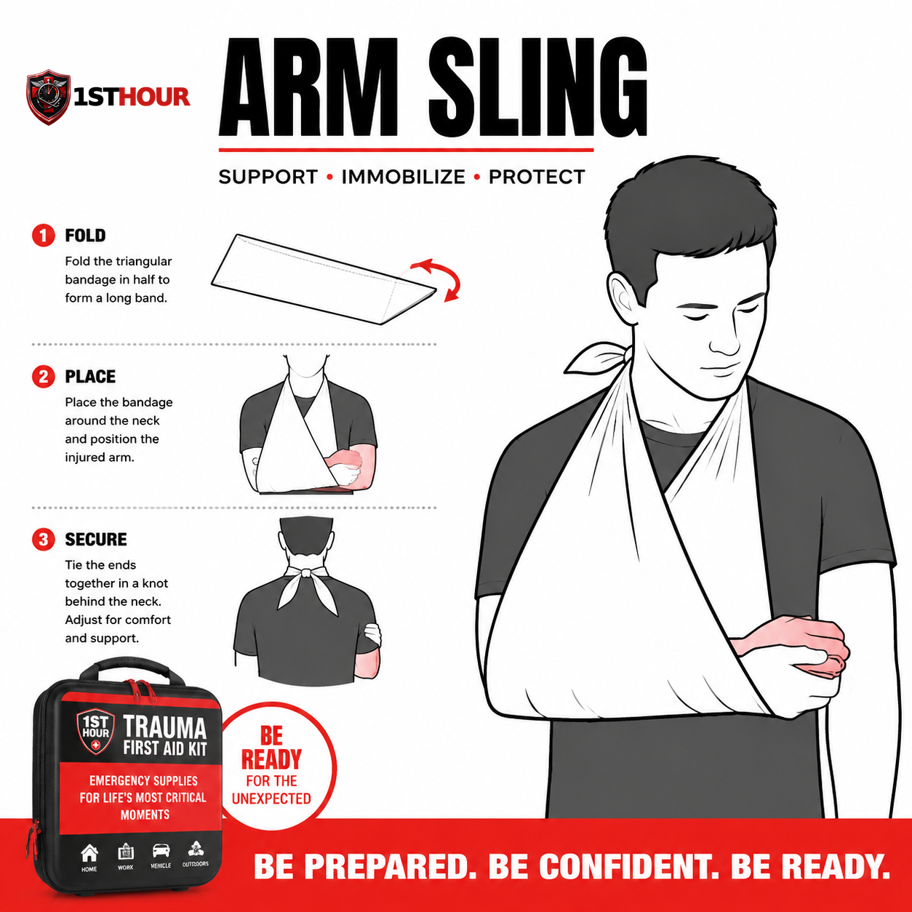

Broken Bones & Splinting
How to splint a suspected fracture in the field — with kit materials or whatever you have on hand — until the person can get real medical care.
1. Why the First Hour Matters
A broken bone is different from most of the emergencies in this library in one important way: it is usually not, by itself, immediately life-threatening. Nobody bleeds out from a simple fracture the way they can from a severed artery, and nobody stops breathing because a wrist is broken. That's worth saying plainly, because it changes what "the first hour" is actually for here.
What the first hour is for, with a suspected fracture, is three things: keeping the person comfortable, preventing the injury from getting worse (a bone end nicking a nearby nerve or blood vessel, or grinding further out of alignment with every unsupported movement), and — critically — preventing a closed fracture from becoming an open one, where the bone breaks through the skin and turns a manageable injury into a bleeding emergency. Good splinting in the first hour does all three.
This guide won't manufacture urgency that isn't there. Most fractures can wait the extra twenty minutes for EMS, or a slower drive to urgent care, without meaningfully changing the outcome — what matters is that the limb is properly stabilized before it's moved at all, and that you know the handful of situations (covered in Section 8) where a fracture actually is a "call 911 now" emergency.
2. Fracture vs. Sprain
A sprain (a stretched or torn ligament) and a fracture (a broken bone) can look almost identical in the first few minutes: swelling, bruising, pain, and an inability to put weight on or use the injured area. Even trained medical staff often can't tell the two apart without an X-ray.
- Signs that lean toward fracture: visible deformity or an unnatural angle, a grinding or grating sensation, the limb looking noticeably shorter or bent compared to the uninjured side, or the person hearing/feeling a "snap" or "crack" at the moment of injury.
- Signs that could be either: swelling, bruising, pain that worsens with movement or weight-bearing, and difficulty using the limb normally.
Here's the practical point, straight from the master framework this protocol is built on: it doesn't matter much which one it actually is. If you can't confidently rule out a fracture, treat it like one. Splinting an injury that turns out to be "only" a bad sprain causes essentially no harm. Failing to splint an injury that turns out to be a fracture can turn a stable injury into an unstable one. When in doubt, splint it.
3. Splint It As You Find It
This is the single instruction in this book most likely to fight your instincts, so it gets said as directly as possible: an angulated (visibly bent or crooked) fracture gets splinted at the angle it's already at. Attempting to straighten it first — even gently, even with good intentions — risks turning a closed fracture into an open one, damaging a nearby nerve or blood vessel that the bone happens to be resting against safely, or causing a level of pain and additional tissue damage that far outweighs any benefit.
Three rules that apply to every splint in this book, regardless of body part:
- Splint it as you find it. Support the limb in the position it's already in. Don't reposition, straighten, or "pop it back."
- Immobilize the joint above and below the injury. A splint that only covers the injury site itself doesn't actually stop the bone from moving — the joints on either side need to be included and held still too.
- Check circulation and sensation below the injury, twice. Once before you splint, and again immediately after. Section 4 explains exactly what to check and what it means if something changes.
Everything in Section 4 builds on these three rules — read them once here so the technique steps make sense, then follow them exactly when you get there.
4. Splinting Technique by Body Part
The mechanics of splinting are the same everywhere on the body: expose the injury (cutting away clothing with trauma shears if it's in the way, rather than pulling clothing over the injury site), pad it, support it on both sides, immobilize the joint above and below, secure it without cutting off circulation, and check that circulation before and after. Below are the two most common cases — an arm/wrist and a leg/ankle — worked through step by step.
Circulation and sensation check — do this before and after every splint
Before you begin, and again once the splint is fully secured, check the area farthest from the injury (fingers or toes):
- Color — should be normal skin tone, not pale, blue, or gray.
- Temperature — should feel about as warm as the uninjured side.
- Pulse — if you know how to check one nearby (wrist, top of foot), it should be present and roughly equal to the uninjured side.
- Sensation and movement — the person should be able to feel a light touch and wiggle fingers or toes, even if it hurts to do so.
Arm or wrist
- Check circulation and sensation at the fingers, per the checklist above. Note what you find before you touch the splint materials.
- Choose a rigid support. A commercial splint from your kit is ideal. Improvised options that work well: a rolled-up magazine or newspaper, a straight stick, a sturdy piece of cardboard, or even a tightly rolled towel for a less rigid but still stabilizing option.
- Pad the support with cloth, gauze, or clothing anywhere it will touch skin directly, especially over the wrist and elbow.
- Place the support along the injured limb in the exact position you found it — do not straighten a bent arm or wrist first (Section 3). The support should extend past both the wrist joint and the elbow joint on either side of the injury.
- Secure it with wraps above and below the injury site — a cravat, gauze roll, strips of cloth, or tape — snug enough to hold the limb still, not tight enough to restrict blood flow. You should be able to slide a finger under each wrap with a bit of resistance.
- Immobilize the elbow and the wrist specifically, not just the forearm in between — this is what actually stops the fracture site from moving when the person shifts their arm.
- Recheck circulation and sensation at the fingers. If anything is worse than your first check, loosen the wraps and recheck again.
- Add a sling (Section 6) to take the weight off the arm entirely, once the splint itself is secure.

Leg or ankle
- Check circulation and sensation at the toes, per the checklist above.
- Control any bleeding first if the leg is also bleeding — see Section 5 if the fracture is open (bone visible through skin).
- Choose rigid supports for both sides of the leg if possible — two straight, sturdy objects (boards, thick branches, trekking poles) padded with cloth, placed along the outside and inside of the leg.
- Position the supports in the exact position you found the leg — do not straighten it first. The supports should extend above the knee and below the ankle, covering both joints.
- Secure with wraps at multiple points — above the injury, below the injury, and at each end near the joints — snug but not tight enough to restrict blood flow to the foot.
- Immobilize the knee and the ankle specifically, the same reasoning as the arm: the joints above and below the fracture are what actually need to stop moving.
- Recheck circulation and sensation at the toes. Loosen and recheck if anything has gotten worse since your first check.
- Do not let the person bear weight on the leg, even with the splint on, unless there is no other way to get them to safety.

5. Open Fractures
An open (compound) fracture is one where the broken bone has punctured through the skin — visible bone, or a wound deep enough that you suspect bone is exposed underneath. This is a different, more urgent situation than a closed fracture, because it's now also an open wound with a real risk of severe bleeding and infection.
- Glove up if you can reach gloves quickly, but don't delay for them. Use bare hands if nothing else is available — non-latex gloves from your kit if they're within reach — then move straight to bleeding control.
- Treat it as a bleeding wound first. An open fracture takes priority over the splint. Apply direct pressure around the wound — see Severe Bleeding & Hemorrhage Control for the full direct-pressure, wound-packing, and tourniquet technique if the bleeding is severe. Don't delay bleeding control to work on the splint.
- Do not attempt to push the bone back under the skin. This risks driving contamination deeper into the wound and causing additional damage. Leave it exactly as you found it.
- Cut away clothing around the wound with trauma shears if needed to see the full extent of the injury and apply a dressing cleanly — cut around the limb rather than moving it.
- Cover the wound with a clean trauma dressing before splinting, if the bleeding allows it — this reduces contamination without disturbing the bone's position.
- Splint the limb in the position you found it, using the same technique as Section 4, being careful not to apply direct pressure onto the exposed bone itself — pad and splint around it, not against it.
- Treat this as a higher-priority 911 call than a closed fracture — see Section 8.
6. Sling Construction
A sling supports the weight of an injured arm, wrist, or shoulder by transferring that weight to the neck and shoulder instead. It's a companion to a splint, not a replacement for one — use a sling to take the weight off an already-splinted arm, or on its own for a shoulder injury a rigid splint can't address.
- Start with a triangular bandage (standard in most trauma kits) or improvise one from a large square of cloth — a bandana, a folded shirt, or a pillowcase — folded corner to corner.
- Position the injured arm across the chest, elbow bent at roughly a right angle, in whatever position is comfortable and doesn't force any movement of a splinted fracture.
- Slide the bandage underneath the arm so one point extends past the elbow and the long edge runs along the forearm, with the two remaining corners reaching up over each shoulder.
- Bring the lower corner up and over the shoulder on the injured side, so both corners meet at the side of the neck.
- Tie the two corners together at the side (not the back) of the neck, padding the knot if it presses uncomfortably.
- Check that the hand sits slightly higher than the elbow — this reduces swelling — and that the sling isn't so tight it restricts breathing or circulation at the neck or shoulder.
- Recheck circulation and sensation at the fingers one more time now that the sling is on, same as Section 4's check.
When to use a sling vs. a rigid splint: a sling alone is appropriate for shoulder, collarbone, and some wrist injuries where there's no significant deformity to immobilize with a rigid support. For an arm or wrist fracture with deformity, apply the rigid splint from Section 4 first, then add the sling on top to support its weight — the two work together.

7. Special Situations
Pediatric splinting
Children's bones include growth plates — softer areas near the ends of long bones where new bone growth happens — that can be injured in ways that look mild (a "sprain-like" swelling with less obvious deformity than an adult fracture) but carry a real risk of affecting future growth if not properly evaluated. Splint a suspected pediatric fracture using the same techniques in Section 4, but err toward professional evaluation even when the injury looks minor — don't assume a child's lack of dramatic deformity means it's "just a sprain."
Splinting alongside other injuries
If you're managing a fracture at the same time as a more severe injury — heavy bleeding, an airway problem, a person who's unconscious — the fracture waits. Address severe bleeding or airway issues completely first, then come back to splinting once those are stable. A properly splinted arm can wait several minutes; an uncontrolled airway or hemorrhage cannot.
8. When to Call 911 vs. Self-Transport
This is the first book in this library where the honest answer to "should I call 911?" is sometimes no — and it's worth saying that plainly rather than defaulting to reflexive "when in doubt, call anyway" advice that would undercut the actual point of this section. A stable, isolated limb fracture with good circulation is a real category of injury where a calm drive to urgent care is a reasonable, common choice.
| Call 911 | Self-transport to urgent care may be reasonable |
|---|---|
| No pulse, no sensation, or a cold/pale/blue limb below the injury — before or after splinting | Pulse, sensation, warmth, and color all normal below the injury after splinting |
| Open fracture (bone visible through skin) | Closed fracture — skin intact over the injury |
| Suspected spinal, pelvic, or femur (thighbone) fracture | An isolated injury to a hand, wrist, forearm, foot, or ankle |
| Severe, uncontrolled bleeding accompanying the fracture | No significant bleeding, or bleeding already fully controlled |
| The person is unable to be safely moved, or is showing signs of shock | The person is alert, stable, and can be moved and transported comfortably once splinted |
If you do self-transport: splint the injury properly first per Section 4, keep it elevated if comfortable and not contraindicated, and drive calmly and directly rather than rushing — a fracture that's been properly splinted is not an emergency that benefits from speed.
9. Aftercare & Follow-Up
- Keep monitoring circulation, sensation, and swelling the entire time you're waiting for EMS or driving to urgent care — a splint that was fine ten minutes ago can become too tight as swelling increases.
- Loosen the splint immediately if you notice numbness, tingling, color change, or worsening pain — these are all signs the splint has become too tight as swelling progressed, not signs the fracture itself is getting worse.
- Keep the injured area elevated above heart level where comfortable and not contraindicated by the injury location — this helps limit swelling.
- Expect imaging. A definitive diagnosis requires an X-ray (or sometimes a CT/MRI for complex injuries) — this is normal and expected, not a sign that your first-aid response was inadequate.
- Expect a cast, splint, or brace to be applied by medical staff, and follow their specific instructions for it, which supersede anything in this guide once professional care begins.
10. Essential Items Checklist
Everything in this protocol assumes you have some combination of these supplies, or the improvised alternatives named alongside each one.
- Rigid splint or splinting material — Section 4. Improvised alternative: a rolled magazine, a straight stick, sturdy cardboard.
- Cravats or wide cloth wraps — Section 4. Secures the splint above and below the injury. Improvised alternative: strips of a clean shirt.
- Triangular bandage — Section 6. Builds the sling. Improvised alternative: a bandana or folded pillowcase.
- Roller gauze or elastic wrap — Sections 4–5. Additional securing material and wound covering for an open fracture.
- Padding material (gauze, cloth) — Section 4. Placed between rigid supports and skin.
- Trauma dressing — Section 5. Covers an open fracture wound before splinting.
- Non-latex gloves — worn before contact with any open wound, per Section 5's bleeding-control step.
- Trauma shears — Sections 4–5. Cuts clothing away to expose and assess the injury without moving the limb.
11. Good Samaritan Protections
This protocol doesn't carry its own state-by-state appendix — splinting technique doesn't vary by geography the way, say, tornado sheltering does, so a full 12-state breakdown here would be padding rather than useful content. The same Good Samaritan legal protections described in Severe Bleeding & Hemorrhage Control's Section 13 apply generally to good-faith emergency splinting assistance — see that book's full state grid for the details, since the underlying legal principle doesn't change by injury type.
12. Medical Disclaimer
This guide is for general educational purposes only and does not constitute medical advice, diagnosis, or treatment. It is not a substitute for professional medical care, emergency medical services, or a certified first aid, CPR, or Stop the Bleed course, which we strongly recommend taking in person.
In any real emergency, call 911 (or your local emergency number) immediately. Nothing in this guide should delay that call.
The Good Samaritan law information referenced in Section 11 is general information, not legal advice. Laws vary by state, change over time, and may have exceptions not covered here. Consult a licensed attorney in your state for guidance on your specific situation.
1st Hour and its parent company make no warranty, express or implied, regarding outcomes from applying the information in this guide, and disclaim liability for actions taken based on its contents to the fullest extent permitted by law.
Editor's note: this edition reflects content as of August 24, 2026. 1st Hour periodically revises protocol guides as best practices evolve — visit 1sthourprotocols.com/broken-bones-splinting for the current edition and to re-download the latest PDF.